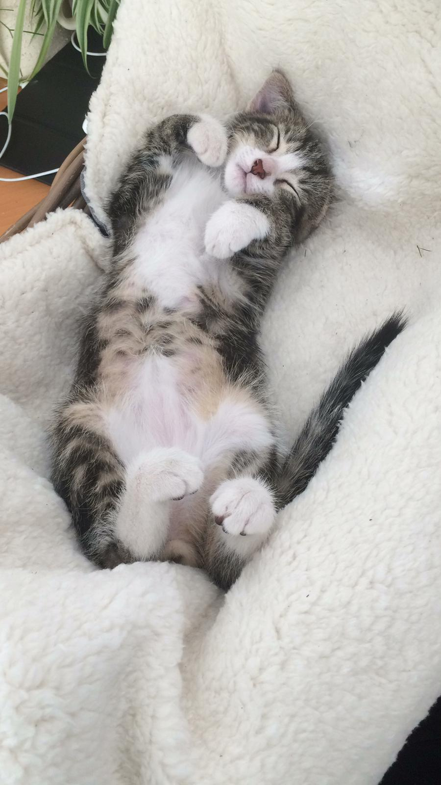
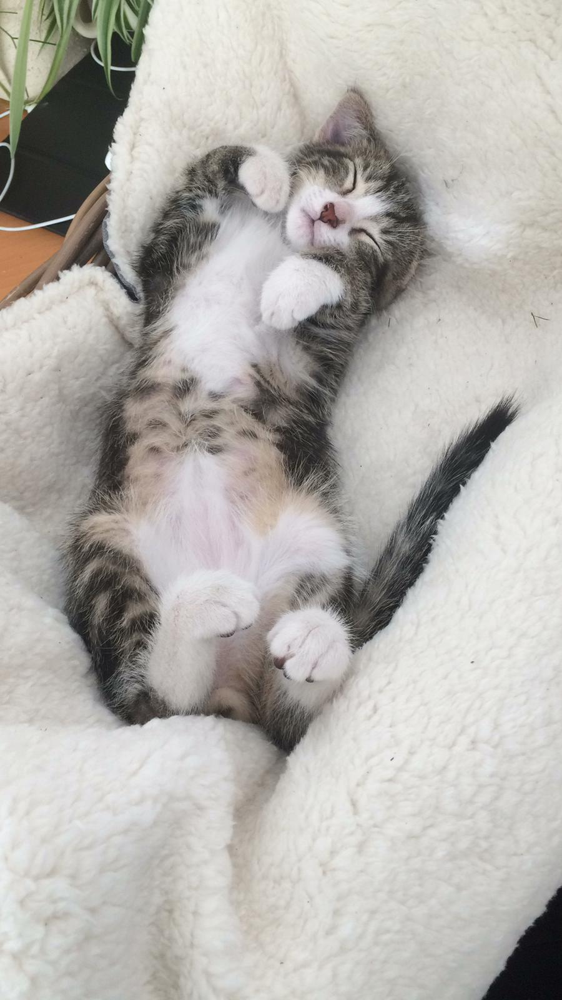

Katten zijn geweldig!
Katten zijn geweldige beesten ze zijn zacht, zorgen voor troost, gezelligheid en niet moeilijk te vezorgen! Zelf heb ik ook 2 katten met de namen Mochi en Cheeto. Ze zijn nu 3 jaar oud en nogsteeds gezellig en ervaren jagers. Hieronder zie je een foto van toen zo nog beide een kitten waren en Mochi on Ice.
 
